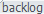
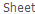
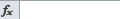
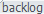
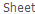
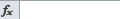

import time
############################################################################
#
#This script help me to create new sheet, named as %month-%day formated
#
#############################################################################
#Make excel UI on top
if not exists():
click()
#Some times , the excel window is not active.
#So we need to click label 'ready' to make the excel window is active.
#We can click icon to add new sheet at next step.
click()
click( )
dragDrop(, )
ISOTIMEFORMAT="%m-%d"
myDate=time.strftime( ISOTIMEFORMAT, time.localtime() )
print myDate
doubleClick()
type(myDate)
click()
type("s",KEY_CTRL)
)
dragDrop(, )
ISOTIMEFORMAT="%m-%d"
myDate=time.strftime( ISOTIMEFORMAT, time.localtime() )
print myDate
doubleClick()
type(myDate)
click()
type("s",KEY_CTRL)